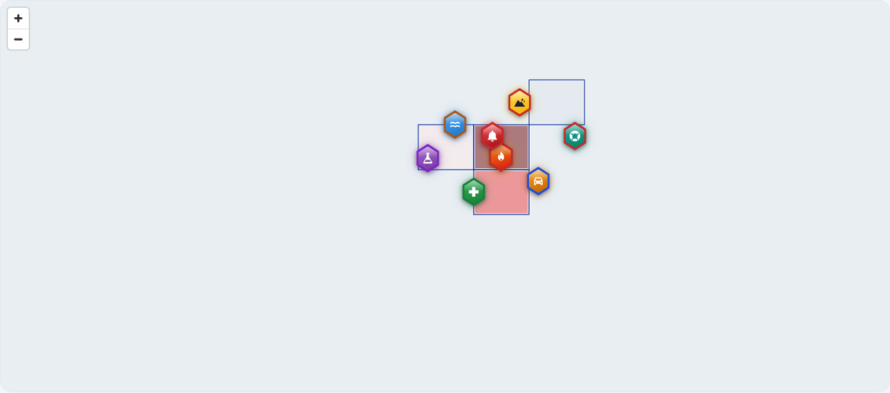
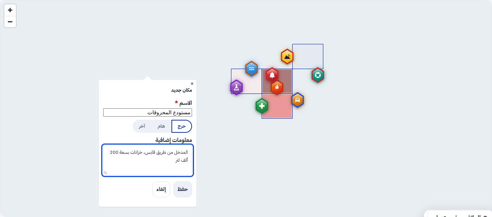
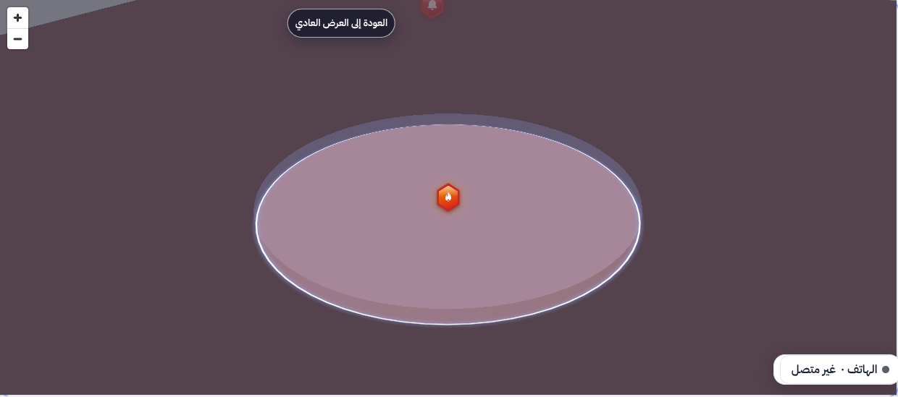
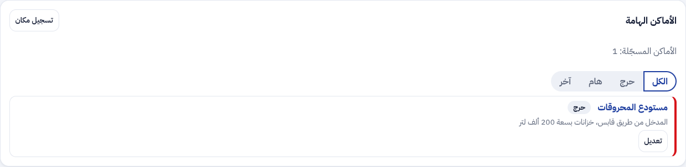

ء-حماية e-Himaya
تقرير المرحلة M: الخرائط والتقسيم الإداري. مرجع Map Tunisia، طبقة الحدود والتلوين حسب السكان، الإنذار بالمعتمديات، الرموز الزجاجية، العرض ثلاثي الأبعاد، الأماكن المسجَّلة، وخادم الخرائط المحلي
1. أين تقع هذه المرحلة من مسار المشروع
التبليغ
←
المعالجة
←
التحليل
←
مؤشرات الأداء KPI
←
التنبؤ بالذكاء الاصطناعي
←
اتخاذ القرار
- التبليغ: كل بلاغ يعرف معتمديته وعمادته وبلديته آليا من موقعه.
- المعالجة: القاعة ترى البلاغات برمز لكل نوع حادث، وتسجّل الأماكن الحرجة والهامة لتعود إليها.
- التحليل: المعتمديات ملوّنة حسب البلاغات لكل 10 آلاف ساكن.
- اتخاذ القرار: الإنذار يُرسل إلى معتمديات بعينها بعدد سكانها، والنقر المزدوج يرفع مكان الحادث بالأبعاد الثلاثة.
2. مراجعة ← تصميم ← تطوير
الطلب: خادم خرائط محلي لتونس بصور القمر الصناعي وكل الطبقات من شبكة الديوان، بدليل تنصيب عربي خطوة خطوة؛ ثم دمج مستودع Map Tunisia حسب وثيقة الخطوات الخمس؛ ثم تنسيق بلوري للحدود والمناطق والرموز برمز لكل نوع حادث، على صورة قاعة العمليات المرجعية؛ ثم بطاقة معلومات أنيقة عند النقر، ورقعة الحادث بالأبعاد الثلاثة بالنقر المزدوج وباقي الخريطة شفافة، وتسجيل الأماكن الهامة والحرجة في قائمة.
الأمن: الأماكن المسجَّلة بأمن مستوى الصفوف بالولاية، وكل تغيير في سجل التدقيق. الإنذار بالمعتمديات لا يتجاوز نطاق القاعة الجهوية (403)، وينشره المركز بمبدأ العينين الأربع. خادم الخرائط للقراءة فقط خلف Caddy (غير GET و HEAD: 405)، ولا يطلب شيئا خارج الشبكة.
المرجع الإداري (M1 إلى M4)
- Map Tunisia (الترحيل 0079): الولايات والمعتمديات والعمادات والبلديات والأقاليم والمقاطعات والمدن والمسطحات المائية برموز المعهد الوطني للإحصاء والتعداد، مع جدول مطابقة لا يغيّر معرّفاتنا.
- عنوان البلاغ: المعتمدية والعمادة والبلدية تُستخرج من الموقع وتظهر في تفاصيله.
- طبقة الحدود بأربعة مستويات، والتلوين حسب البلاغات لكل 10 آلاف ساكن بدليل ألوان وقائمة.
- الإنذار بالمعتمديات (الترحيل 0080): نمط ثالث في محرّر الإنذار، بعدد السكان المعنيين قبل الإرسال.
التنسيق البلوري والتفاعل
- رموز سداسية زجاجية بلون كل نوع حادث وأيقونته، ونبضة للبلاغ الجديد تتوقف لمن طلب تقليل الحركة.
- المناطق والحدود بحواف مضيئة وحافة بيضاء تُقرأ فوق صور القمر الصناعي، والنوافذ والأزرار زجاج مصنفر.
- العرض ثلاثي الأبعاد: النقر المزدوج يرفع قرص 500 م ومبانيه، وباقي الخريطة تحت غشاء شفاف؛ نقر مزدوج ثانٍ يعيدها.
- الأماكن المسجَّلة (الترحيل 0081): الاسم والنوع (حرج، هام، آخر) والملاحظة، في قائمة تُصفّى ويُطار إليها.
خادم الخرائط المحلي
- التحضير مرة واحدة (الملف الشخصي
maps-prepare): Planetiler يبني بلاطات تونس المتجهة، والخطوط Noto، وصور القمر الصناعي MBTiles (مرآة أو GeoTIFF عبر GDAL).
- التشغيل: TileServer GL خلف Caddy على
/maps؛ اللوحة والبوابة والتطبيق تقرأ منه بإعدادات BASEMAP_* و MAP_STYLE_URL، و Valhalla يُبنى من الملف نفسه.
- الدليل: offline-maps.md بالعربية خطوة خطوة، ونسخه HTML و Word و PDF في
guide/.
3. لقطات [SIM]
الرموز الزجاجية حسب نوع الحادث فوق المعتمديات الملوّنة حسب البلاغات لكل 10 آلاف ساكن:

تسجيل مكان حرج بالنقر على الخريطة:

النقر المزدوج على رمز الحريق: الرقعة بالأبعاد الثلاثة وباقي الخريطة شفافة:

قائمة الأماكن المسجَّلة بأنواعها:

4. التقدم لكل جزء
| البند | الحالة | التقدم |
|---|
| FR-M-01 إلى 04 المرجع الإداري وعنوان البلاغ (F-SRV-45) | منجز |
|
| FR-M-05 و 06 طبقة الحدود والتلوين حسب السكان (F-DSH-102) | منجز |
|
| FR-M-07 الإنذار بالمعتمديات (F-DSH-103، F-SRV-46) | منجز |
|
| FR-M-08 الرموز الزجاجية والتنسيق البلوري (F-DSH-104) | منجز |
|
| FR-M-10 بطاقة المعلومات والعرض ثلاثي الأبعاد والأماكن المسجَّلة (F-DSH-105 و 106) | منجز |
|
| FR-M-09 خادم الخرائط المحلي ودليله (F-SRV-47) | منجز في المستودع |
|
| التنصيب على خادم الديوان (M-1) | ينتظر الديوان |
|
تقدم المرحلة M: 100%. يبقى التنصيب عند الديوان.
5. المحاكاة [SIM]
- [SIM] البلاغات والأماكن في اللقطات مختلَقة؛ الحدود والتعداد حقيقيان من Map Tunisia.
- [SIM] خلفية اللقطات مرسومة محليا لأن بيئة الالتقاط لا تصل إلى خوادم البلاطات.
- جلب صور القمر الصناعي (
fetch_tiles.py) جُرّب على خادم وهمي محلي؛ البناء الكامل لبلاطات تونس يتم على جهاز متصل عند التنصيب.
6. الاختبارات المطبقة
| المكوّن | العدد | النتيجة |
|---|
| الخلفية (pytest) | 1121، منها test_admin_reference.py و test_places.py و test_basemap.py | ناجحة على قاعدة جديدة (2 متخطّاة كالعادة) |
| الترحيلات | صعودا ونزولا ثم صعودا حتى 0081 | ناجحة |
| لوحة القيادة (vitest) | 613، منها messageForm و SavedPlaces | كلها ناجحة |
| لوحة القيادة (Playwright مع axe) | 94، منها phase-m.spec.ts | كلها ناجحة، دون أي مخالفة |
النمطان (مدقّق MapLibre)، ruff و mypy و eslint و tsc، و OpenAPI و ERD | — | لا ملاحظة |
- النطاق: مكان أو إنذار في ولاية خارج نطاق القاعة يُرفض (403)، ومكان خارج تونس يُرفض (422).
- الإنذار بمعتمديتين (صفاقس المدينة وقرقنة) يصبح مضلّعا متعدّدا ويصل إلى من فيهما فقط، ثم يُلغى.
- المتصفح: الرموز حسب النوع، والتلوين، وتسجيل مكان حرج، والنقر المزدوج على رمز الحريق ثم العودة.
8. المخرجات المحيَّنة
- الملف الوصفي V27 (docx و pdf) في
spec/: F-DSH-102 إلى 106 و F-SRV-45 إلى 47، 568 مسارا و685 عملية، 81 ترحيلا، الاختبارات، خارطة الطريق، والمصطلحات.
- مخططات UML في
diagrams/: تسلسل الإنذار بالمعتمديات (7b) والأماكن المسجَّلة والعرض ثلاثي الأبعاد (7c) وخادم الخرائط المحلي (7d)، وصنف «المكان المسجَّل» في مخطط المحتوى، وحالات الاستعمال S77 إلى S79.
- العرض للمسؤولين في
presentation/: 49 مرحلة، الاختبارات، وخارطة الطريق.
- مرجع التصميم مُعاد توليده بألوان الرموز الزجاجية وأنواع الأماكن: design-reference.html.
- دليل خادم الخرائط المحلي ودليلا التنصيب في
guide/، وسجل الإصدارات، والقائمة المؤجلة (§3.9)، واللقطات في screens/m/.
9. ملاحظات وانحرافات
- 12 بلدية بلا حدود في OpenStreetMap بعد (منها صفاقس)، فالبلاغ فيها بلا بلدية إلى أن تُكمَل؛ والحدود «للتحقق» إلى مصادقة الديوان أو المعهد الوطني للإحصاء.
- MapLibre 6 يرسم العربية بنفسه، فلم تعد إضافة النص من اليمين إلى اليسار لازمة.
- صور EOX المفتوحة بدقة 10 م ورخصة لغير الاستعمال التجاري؛ لدقة أعلى دون اتصال تُستورد صور المزوّد المدفوع GeoTIFF.
10. ما يلي
الدمج، ثم تنصيب خادم الخرائط على خادم الديوان باتباع الدليل، ثم التجربة الميدانية.